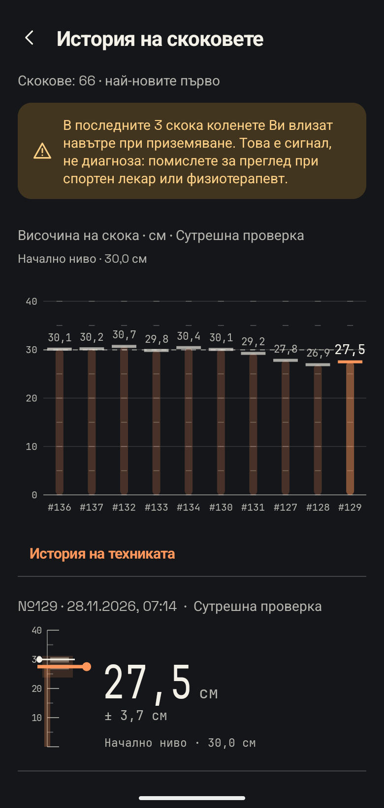
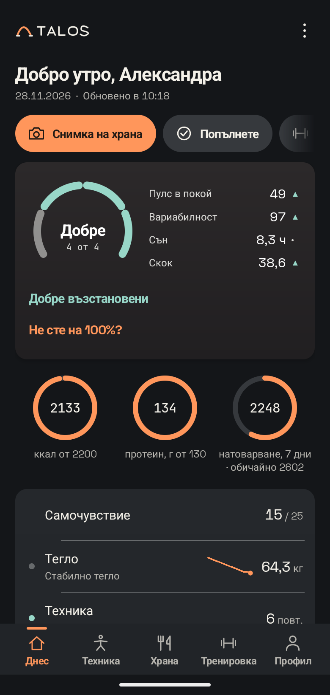

Защо
Без апаратура. Един телефон и клип от 10 секунди стигат за числата на скока.
Сигнал навреме. Ако в 3 скока подред коленете влизат навътре, приложението предлага преглед при спортен лекар или физиотерапевт.
Видеото остава на телефона. Към сървъра тръгват само числа, без видео.
Скокът: как работи
- Заснемете. Телефонът е на височината на коленете, спортистът е целият в кадъра, заснема се отпред.
- Анализирайте. На самия телефон: височина и време на полет, сгъване на коленете, колене навътре, асиметрия.
- Вижте сигнала. Историята показва промяната във времето и кога е време за преглед. Числата се пазят на сървъра, треньор ги вижда само ако имате такъв.
Инструментите
Тренировка: серии с таймер за почивка, шаблони, интервален таймер (Табата, EMOM, AMRAP), калкулатори за дискове, максимум и загрявка, планове от треньора.
Хранене: каталог с над 13 000 храни, баркод, рецепти, микронутриенти, адаптивни дневни цели.
Готовност: сравнение със собствените 28 дни, сън, натоварване, седмична серия от тренировки.
Техника: брояч на повторения и задържане с камерата. Броенето на клекове и времето в планк са проверени; другите упражнения са експериментални. AI помощник с потвърждение.
По желание треньор в браузъра вижда същите числа; новите записи идват на живо.

Сигнал за преглед след 3 скока

„Днес“: числата и изводите от тях